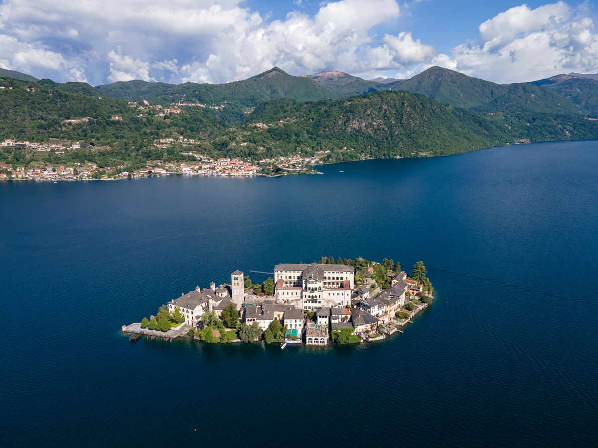
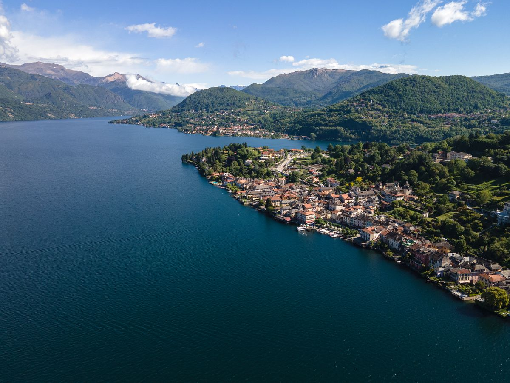
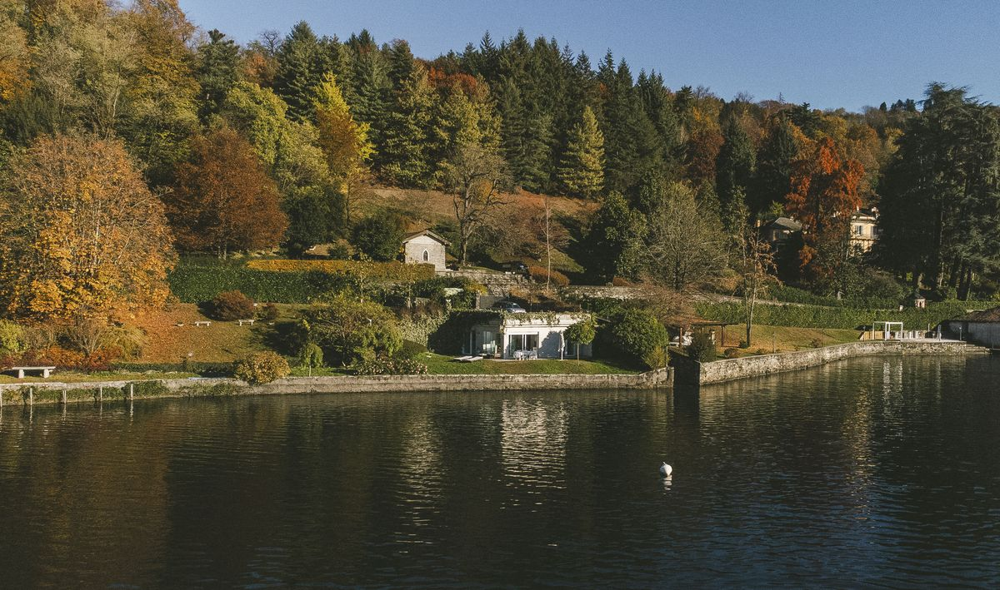

On le découvre souvent par hasard : une photo de l'île San Giulio posée sur l'eau, un ami qui en revient, un détour depuis le lac Majeur. Et l'on se demande pourquoi on n'en avait jamais entendu parler. Le lac d'Orta est l'un des lacs italiens les moins connus du grand public, et c'est justement ce qui fait son charme.
Ce guide rassemble l'essentiel pour comprendre où il se trouve, ce qu'on y fait, quand venir et comment y arriver depuis la France ou la Belgique. Pour chaque sujet, vous trouverez un lien vers un article plus détaillé si vous voulez aller plus loin.
Où se trouve le lac d'Orta ? Situation et carte
Le lac d'Orta se trouve dans le Piémont, au nord-ouest de l'Italie, juste à l'ouest du lac Majeur dont il n'est séparé que par une crête de collines boisées, dominée par le Mottarone. Il est partagé entre la province de Novare et celle du Verbano-Cusio-Ossola. Les Italiens l'appellent aussi Cusio, du nom ancien de la région.
C'est un lac étroit et allongé, orienté nord-sud. On compte environ une heure de route depuis l'aéroport de Milan-Malpensa, un peu plus depuis le centre de Milan.
Autour de l'eau, quelques localités à repérer sur la carte :
- Orta San Giulio, sur la rive est : le village le plus célèbre, face à l'île.
- L'île San Giulio, à quelques centaines de mètres du rivage d'Orta.
- Pella, sur la rive ouest, avec une jolie vue sur l'île et Orta en face.
- Pettenasco, au nord d'Orta, sur la même rive.
- Omegna, à la pointe nord : la seule vraie petite ville du lac.
- Gozzano, au sud, d'où l'on rejoint facilement Novare.
Voici une carte interactive pour vous situer :
Le lac d'Orta en chiffres et en quelques mots
Le lac mesure environ 13 km de long pour un peu plus de 2 km dans sa partie la plus large. Sa profondeur maximale dépasse les 140 mètres. À taille humaine, donc : on en fait le tour en voiture en moins d'une heure, et l'on voit presque toujours l'autre rive.
Une curiosité étonne souvent les visiteurs : ses eaux s'écoulent vers le nord, vers les Alpes, alors que la plupart des lacs préalpins se déversent vers la plaine du Pô. L'émissaire, la Nigoglia, part d'Omegna et rejoint finalement le lac Majeur par un long détour. Les habitants d'Omegna en ont fait une fierté locale et une devise.
On le décrit souvent comme le plus romantique des lacs italiens. Ce n'est pas qu'une formule : pas de grands axes routiers en bord d'eau, pas d'immenses hôtels, un village historique fermé aux voitures et une île silencieuse au milieu du lac. Le tourisme existe, surtout en été et le week-end, mais il reste loin de l'affluence du lac de Côme ou du lac de Garde.
Le lac a aussi une histoire environnementale singulière. Pollué pendant des décennies par les rejets industriels, il a fait l'objet à la fin des années 1980 d'une opération de chaulage d'une ampleur inédite, qui lui a rendu la vie. Pour les curieux, nous racontons cette histoire dans le miracle du chaulage du lac d'Orta.
Que faire au lac d'Orta : les incontournables
L'île San Giulio et sa légende
C'est l'image du lac d'Orta. Depuis la piazza Motta, des bateaux-taxis vous y déposent en quelques minutes. Sur l'île, une basilique romane, l'abbaye des sœurs bénédictines et une unique ruelle qui en fait le tour, ponctuée de petites maximes sur le silence et la méditation. Selon la légende, saint Jules aurait traversé le lac sur son manteau pour chasser les serpents et les dragons qui y vivaient. Toute l'histoire est à lire dans la légende de San Giulio, et les amateurs de littérature apprécieront aussi le Baron Lamberto de Gianni Rodari, roman situé sur l'île.
Le Sacro Monte d'Orta, classé à l'UNESCO
Sur la colline qui domine le village, un parc boisé abrite une vingtaine de chapelles consacrées à la vie de saint François d'Assise, ornées de fresques et de statues en terre cuite grandeur nature. Le site fait partie des Sacri Monti du Piémont et de Lombardie, inscrits au patrimoine mondial. On y monte à pied depuis le village en une vingtaine de minutes. Notre guide : le Sacro Monte d'Orta.
Le bourg d'Orta et la piazza Motta
Le cœur d'Orta San Giulio, c'est la piazza Motta, ouverte sur le lac et l'île, avec ses cafés et le petit Palazzo della Comunità sur ses arcades. De là partent des ruelles pavées, des passages vers l'eau et la montée vers l'église Santa Maria Assunta. Le centre historique est piéton : on laisse la voiture aux parkings à l'entrée du village.
Le tour du lac à pied
Des sentiers relient les villages, les hameaux perchés et les points de vue au-dessus du lac. On peut en faire de courts tronçons à la demi-journée ou envisager le tour complet en plusieurs étapes. Itinéraires et conseils dans faire le tour du lac d'Orta à pied, et d'autres idées sportives dans les activités de plein air.
La baignade en été
Oui, on se baigne dans le lac d'Orta, et l'eau est agréable de juin à septembre environ. Il existe des plages aménagées, des lidos payants et des accès plus sauvages. Tout est détaillé dans se baigner dans le lac d'Orta et les plages du lac d'Orta.
Vous venez en famille ? Jetez un œil à notre guide du lac d'Orta avec des enfants.

Quand venir : saison par saison
L'été (juin à août) est la saison de la baignade, des longues soirées sur la piazza et des bateaux qui circulent le plus souvent. C'est aussi la période la plus fréquentée, surtout en août et le week-end : réservez votre logement tôt.
Le printemps (avril-mai) est peut-être la plus belle surprise : jardins en fleurs, températures douces, randonnées agréables et village encore calme. L'eau est en revanche trop fraîche pour la plupart des baigneurs. Voir le lac d'Orta au printemps.
L'automne offre des couleurs magnifiques sur les collines et une lumière douce sur l'eau. Les vacances de la Toussaint sont une bonne période pour une escapade tranquille : nous en parlons dans vacances de la Toussaint au lac d'Orta.
L'hiver est la saison du silence. Soyons honnêtes : une partie des restaurants, des boutiques et des lidos ferment, et les services de bateaux sont réduits. Mais le village reste vivant, le Sacro Monte se visite toute l'année et les fêtes de fin d'année ont un charme particulier. À lire : le lac d'Orta en automne et en hiver et Noël et le Nouvel An au lac d'Orta.
Pour les horaires des bateaux de ligne, qui changent selon la saison, consultez toujours le site officiel de Navigazione Lago d'Orta avant votre visite.
Comment venir depuis la France et la Belgique
En voiture, deux grandes options. Depuis l'est de la France, la Suisse ou la Belgique, le col du Simplon mène à Domodossola, puis l'on descend vers Gravellona Toce et Omegna. Depuis Lyon, Genève ou les Alpes françaises, le tunnel du Mont-Blanc conduit vers la vallée d'Aoste puis les autoroutes vers le lac. Péages, vignette suisse et conseils pratiques sont détaillés dans aller au lac d'Orta en voiture.
En avion, l'aéroport le plus pratique est Milan-Malpensa, à environ une heure de route. Louer une voiture sur place simplifie beaucoup les choses.
En train, c'est possible mais plus lent : la petite gare d'Orta-Miasino se trouve sur la ligne Novare–Domodossola, à quelques kilomètres au-dessus du village, avec des trains peu fréquents. Toutes les options sont comparées dans comment venir au lac d'Orta.

Lac d'Orta ou lac Majeur ?
Beaucoup hésitent entre les deux, et ils sont si proches qu'on peut facilement combiner. Le lac Majeur est immense, avec ses îles Borromées, ses grandes villas et ses promenades animées. Le lac d'Orta est plus intime : tout se fait à pied ou presque, le rythme est plus lent, l'ambiance plus paisible.
Un bon compromis : loger au lac d'Orta pour le calme et faire une journée d'excursion au lac Majeur. Notre comparatif complet : lac Majeur ou lac d'Orta. Et si vous hésitez avec d'autres lacs, voir aussi lac de Côme ou lac d'Orta et lac de Garde ou lac d'Orta.

Où dormir au lac d'Orta
Orta San Giulio est le point de départ idéal pour un premier séjour : l'île, le Sacro Monte, les restaurants et les sentiers sont à portée de pas, et l'on peut profiter du village le soir, quand les visiteurs de la journée sont repartis.
Pour quelques jours, une maison de vacances a souvent plus de sens qu'un hôtel : on a de la place, une cuisine pour profiter des produits locaux, et l'on vit au rythme du village plutôt qu'à celui d'un établissement. C'est aussi plus simple si vous voyagez avec un chien. Le lac d'Orta est assez accueillant pour nos compagnons à quatre pattes, comme nous l'expliquons dans le lac d'Orta avec son chien.
Villa Volpe se trouve justement sur le bord du lac, à Orta San Giulio. La maison accueille jusqu'à 4 personnes, les chiens y sont les bienvenus et elle dispose d'une plage privée pour se baigner ou simplement regarder la lumière changer sur l'eau. Elle est aussi accessible en fauteuil roulant, y compris l'accès à la plage : pour organiser votre séjour, voir notre guide du lac d'Orta accessible.
Pour vos questions pratiques, consultez notre page de questions fréquentes.
Pourquoi séjourner à Villa Volpe pour découvrir le lac
Pour une première découverte du lac d'Orta, le plus beau cadeau est de ne pas avoir à courir. À Villa Volpe, vous êtes sur le lac, à deux pas du village : vous partez le matin vers l'île ou le Sacro Monte, vous revenez vous baigner l'après-midi depuis la plage privée, et le soir le lac est à vous. Une maison simple et confortable pour quatre, où votre chien a sa place et que l'on réserve en direct, sur notre site.
Questions fréquentes
Peut-on se baigner dans le lac d'Orta ?
Oui. L'eau du lac d'Orta est propre et la baignade est agréable de juin à septembre environ. On trouve des plages publiques, des lidos aménagés et quelques accès plus sauvages autour du lac.
Combien de jours prévoir au lac d'Orta ?
Une journée suffit pour voir Orta San Giulio, l'île San Giulio et le Sacro Monte, mais c'est un peu court. Comptez trois à cinq jours pour profiter du lac sans courir, faire quelques balades, vous baigner et visiter les environs, comme le lac Majeur.
Faut-il une voiture au lac d'Orta ?
Pas forcément sur place : à Orta San Giulio, tout se fait à pied, et des bateaux relient les villages. Mais pour arriver et explorer les environs, la voiture est de loin la solution la plus pratique, car les transports en commun sont peu fréquents.
Peut-on venir au lac d'Orta avec un chien ?
Oui, le lac d'Orta convient bien aux chiens : sentiers, promenades au bord de l'eau et de nombreux hébergements qui les acceptent. Gardez votre chien en laisse dans le village et renseignez-vous sur les règles propres à chaque plage.
Où se trouve le lac d'Orta en Italie ?
Le lac d'Orta est situé dans le Piémont, au nord-ouest de l'Italie, juste à l'ouest du lac Majeur. Il se trouve à environ une heure de route de l'aéroport de Milan-Malpensa.